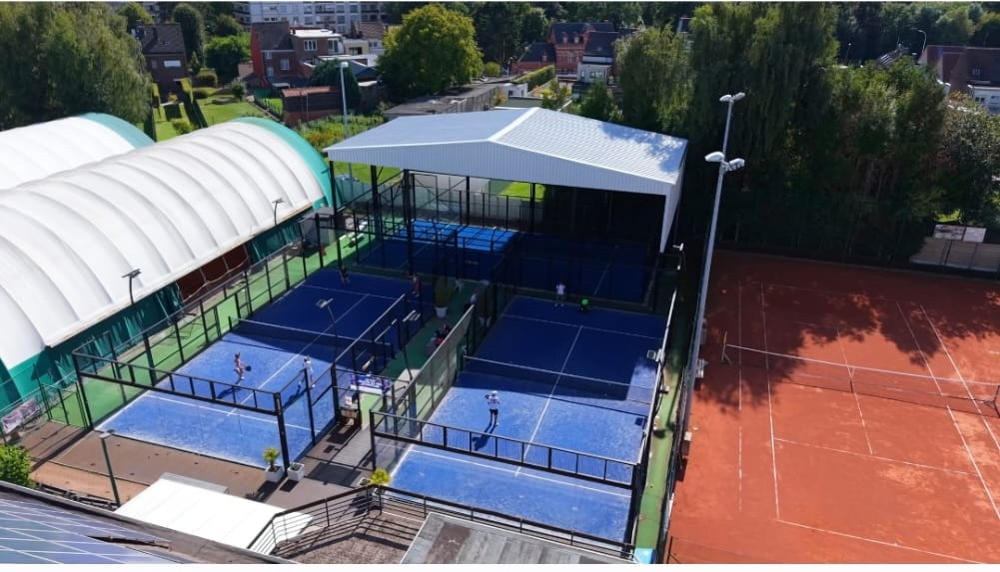

Ontwikkel je tennisspel
De actuele lesreeksen, leeftijden, niveaus, lesmomenten en prijzen worden op deze pagina gepubliceerd zodra ze door de school bevestigd zijn.
Er staan bewust geen links meer naar de oude website of oude lespagina's. Voor actuele informatie kun je rechtstreeks contact opnemen met de club.
Vraag informatie aanInschrijvingen voor nieuwe lessenreeksen worden hier toegevoegd zodra de juiste inschrijvingslink beschikbaar is.
